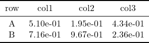
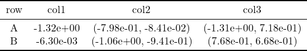
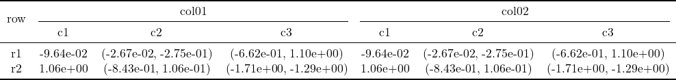
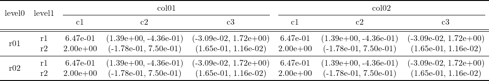
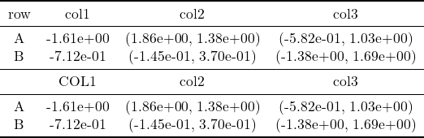
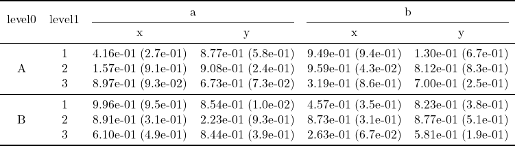
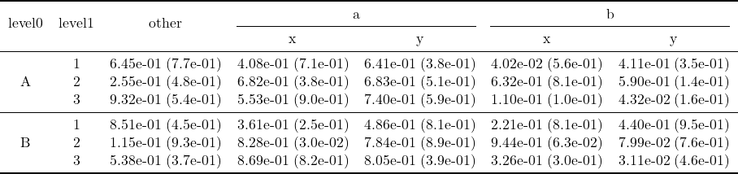
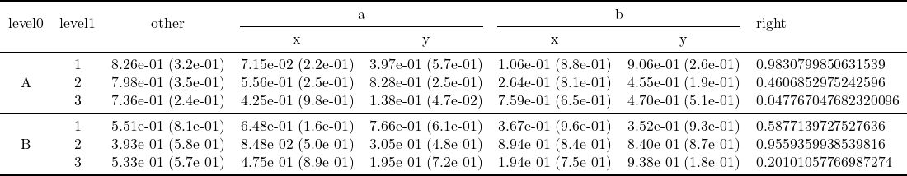

Examples
One-level rows and One-level columns
A = rand(2, 3)
print2tex(A, ["A", "B"], ["col1", "col2", "col3"], file = "ex0.tex")
tex2png("ex0.tex")"ex0.png"
Tuple in a cell
For example, it might be the confidence interval.
a = randn(2)
b = [randn(2) for i = 1:2, j = 1:2]
A = hcat(a, b)
print2tex(A, ["A", "B"], ["col1", "col2", "col3"], file = "ex01.tex")
tex2png("ex01.tex")"ex01.png"
Two-level Columns
a = randn(2)
b = [randn(2) for i = 1:2, j = 1:2]
A = hcat(a, b)
B = hcat(A, A)
print2tex(B, ["r1", "r2"], ["col01", "col02"], subcolnames = ["c1", "c2", "c3"], file="col2.tex")
tex2png("col2.tex")"col2.png"
a = randn(2)
b = [randn(2) for i = 1:2, j = 1:2]
A = hcat(a, b)
B = hcat(A, A)
C = [B, B]
print2tex(C, ["r01", "r02"], ["col01", "col02"], subcolnames = ["c1", "c2", "c3"], subrownames = ["r1", "r2"], colnames_of_rownames = ["level0", "level1"], file="row2col2.tex")
tex2png("row2col2.tex")"row2col2.png"
Share rownames: combine two tables
a = randn(2)
b = [randn(2) for i = 1:2, j = 1:2]
A = hcat(a, b)
A2 = hcat(a, b)
print2tex(A, ["A", "B"], ["col1", "col2", "col3"], A2 = A2, colnames2 = ["COL1", "col2", "col3"], file = "ex02.tex")
tex2png("ex02.tex")"ex02.png"
Two-level rows and Two-level columns
μ = [rand(3, 4), rand(3, 4)]
σ = [rand(3, 4), rand(3, 4)]
print2tex(μ, σ, ["A", "B"], ["a", "b"], ["1","2","3"], ["x", "y"], file = "ex1.tex")
tex2png("ex1.tex")"ex1.png"
Add columns on the left
others = [rand(3, 1), rand(3, 1)]
others_σ = [rand(3, 1), rand(3, 1)]
print2tex(μ, σ, ["A", "B"], ["a", "b"], ["1","2","3"], ["x", "y"], file = "ex2.tex", other_cols = others, other_col_names = ["other"], other_cols_σ = others_σ)
tex2png("ex2.tex")"ex2.png"
Add columns on the right
right = [[rand(3), rand(3)]]
print2tex(μ, σ, ["A", "B"], ["a", "b"], ["1","2","3"], ["x", "y"], file = "ex3.tex", other_cols = others, other_col_names = ["other"], other_cols_σ = others_σ, right_cols = right, right_col_names = ["right"])
tex2png("ex3.tex")"ex3.png"